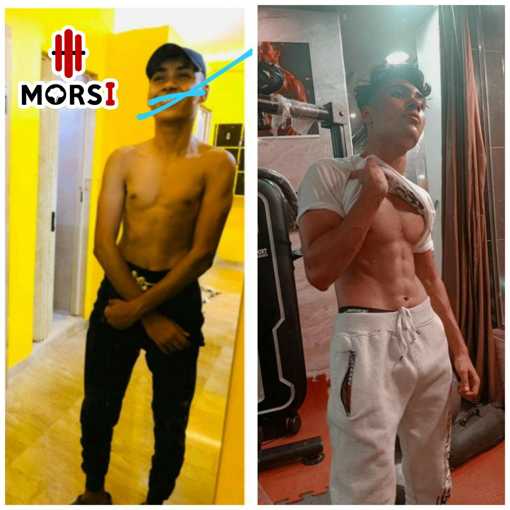
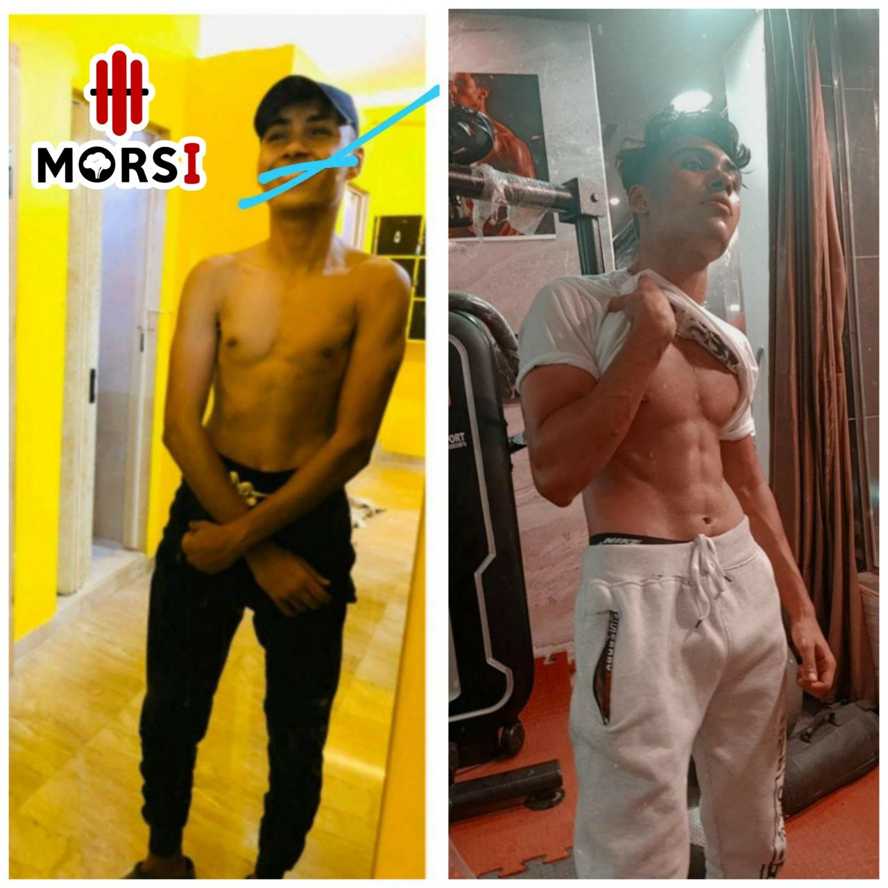

كيف يمكن دمج الرياضة في حياتي اليومية؟
ابدأ بتخصيص خمس دقائق يوميًا للجري أو الركض، وحاول زيادة المدة تدريجيًا حتى تصل إلى 45 دقيقة من التمارين في الصالة الرياضية، مع أخذ يوم للراحة.
مرحبًا بك في عالم التدريب الشخصي والتغذية عبر الإنترنت، حيث الصحة واللياقة تلتقيان بالتوجيه المخصص. هل تسعى دائمًا للعثور على مدرب يفهم احتياجاتك الفردية، يصمم لك خطط تدريب وتغذية مخصصة لتحقيق أهدافك، ويدعمك في كل خطوة على طريق النجاح؟ اسمح لي أن أقدم نفسي…
دعني اعرفك بنفسي

بكل فخر، أعلن عن حصولي على شهادات متقدمة في التدريب الرياضي والتغذية، مما يعزز مسيرتي المهنية ويعكس التزامي بالتطور المستمر. هذه الشهادات تجسد إلتزامي بالمعرفة العلمية وأحدث التقنيات في عالم اللياقة والصحة.
 "قوتك لا تأتي من ما تفعله مرة واحدة، بل من ما تقوم به بانتظام. كل تمرين، وكل وجبة صحية تقربك أكثر إلى هدفك.
استمر، وتذكّر دائمًا أن كل جهد تبذله اليوم هو استثمار في صحتك وقوتك المستقبلية"
"قوتك لا تأتي من ما تفعله مرة واحدة، بل من ما تقوم به بانتظام. كل تمرين، وكل وجبة صحية تقربك أكثر إلى هدفك.
استمر، وتذكّر دائمًا أن كل جهد تبذله اليوم هو استثمار في صحتك وقوتك المستقبلية"
الهيلث كوتشنج أو التدريب الصحي هو مصطلح يشير إلى عملية العمل مع مدرب صحي لتحسين اللياقة البدنية وتحقيق أهداف صحية. يقوم مدربو اللياقة البدنية الصحية بتقديم إرشادات وبرامج تمرين مخصصة لاحتياجات الفرد، سواء كانت هذه الاحتياجات تتعلق بفقدان الوزن، زيادة اللياقة البدنية، تحسين الصحة العامة، أو أي هدف صحي آخر. يشمل الهيلث كوتشنج تقديم نصائح غذائية سليمة، وتصميم برامج تمارين فعالة، ومتابعة تقدم الشخص في تحقيق أهدافه الصحية. يهدف الهيلث كوتشنج إلى تحفيز الأفراد وتمكينهم لاتخاذ قرارات صحية في حياتهم اليومية. يمكن للهيلث كوتشنج أن يكون فعّالاً في تحسين الصحة العامة وتحقيق التوازن بين النشاط البدني والتغذية السليمة. يُستخدم الهيلث كوتشنج في مختلف المجالات، بدءًا من اللياقة البدنية العامة وصولاً إلى التحكم في الوزن وإدارة التوتر وتحسين الأداء الرياضي.
إنه لمصدر فخر لي أن أشهد عملائي وهم يبلغون أهدافهم الصحية واللياقة البدنية، بفضل البرامج التدريبية الشخصية التي أصممها لهم. يسعدني رؤية التغييرات الإيجابية في حياتهم، والتي تجسد إخلاصي ومعرفتي في هذا المجال. عملائي يتخطون توقعاتهم بفضل الإرشاد المستمر والدعم الذي أقدمه، مما يساعدهم على التقدم في مسار اللياقة البدنية.


انا فخور بتحقيق عملائي لأهدافهم الصحية واللياقة البدنية بفضل البرامج التدريبية المخصصة التي أقدمها. من دواعي سروري أن أرى التحولات الإيجابية في حياة عملائي والتي تعكس التزامي وخبرتي في مجال اللياقة البدنية. تجاوز عملائي توقعاتهم بفضل التوجيه المستمر والدعم الذي أوفره لهم في كل خطوة من رحلتهم نحو اللياقة.
.jpg)
.jpg)
.jpg)


.jpg)
 

.jpg)
.jpg)
.jpg)
أنت على وشك البدء في مغامرة لتحقيق الجسم الذي تحلم به. سأكون رفيقك في كل خطوة من هذه الرحلة. بالتركيز على التغذية المتوازنة والتمارين البدنية، ستشهد تحسنًا ملحوظًا في صحتك ومظهرك بكل يسر. اسمح لي أن أكون مرشدك ودعمك في سعيك لبلوغ أهدافك.
❝ من خبرتي الطويلة في هذا الميدان، لاحظت أن العائق الأساسي أمام الكثيرين في بلوغ أهداف اللياقة هو غياب الدعم الشخصي المصمم لاحتياجاتهم والذي يحفزهم على تحمل المسؤولية. أنت هنا لتكتشف ذاتك وتتبع برنامجًا مخصصًا يُعد بعناية، وسترى الفرق الكبير بين: ❝
الصحة ليست فقط خلو الجسم من الأمراض، بل هي حالة من العافية البدنية والذهنية والاجتماعية. للحفاظ على صحتك، من المهم الانتباه إلى نمط حياتك وعاداتك اليومية واتباع خطوات بسيطة ولكنها فعّالة. إليك بعض الأسئلة التي قد تجد فيها فائدة
ابدأ بتخصيص خمس دقائق يوميًا للجري أو الركض، وحاول زيادة المدة تدريجيًا حتى تصل إلى 45 دقيقة من التمارين في الصالة الرياضية، مع أخذ يوم للراحة.

ستلاحظ تحسنًا في صحتك العامة، زيادة في مستوى طاقتك وحيوية جسدك، تحسن في المزاج وانخفاض التوتر. كذلك، يسهم اتباع نظام غذائي سليم مع التمارين في تعزيز شعورك بالعافية وتحسُّن جودة حياتك بشكل عام.
المستشار الصحي يساعدك على تحديد أهدافك، وضع خطط عملية، والإشراف على تنفيذها وتقييم النتائج. كما يشجعك على التزام نظام غذائي سليم، ممارسة التمارين، وغيرها من عادات الحياة الصحية.
بيستخدم كتير من خدمات التدريب اونلاين ومدربين اللياقة البدنية برامج جاهزة للتمرين والنظام الغذائي، يعني نفس البرنامج للكل مهما كان عمرهم أو خبرتهم أو أهدافهم. بس في التدريب الاونلاين بتاعي، كل حاجة بتتخصص بدايه من خطط التغذية وبرامج التمرين، وبتتحدد حسب جدول عملك ونمط حياتك. وده السبب اللي خلاني بقبل عدد محدود من العملاء بس، عشان أقدر أديهم الاهتمام اللي يستحقوه.
من الضروري أن تكون خطتك الغذائية ملائمة لإمكانياتك المادية وأذواقك الشخصية. يمكنك انتقاء الأصناف الغذائية التي تستمتع بها والتي تتناسب مع ميزانيتك، ومن ثم سأقدم لك نظامًا غذائيًا متكاملًا يراعي هذه الاختيارات.
تتغير الخطط الغذائية كل 10-15 يومًا للسماح بتعديلات على البرنامج الغذائي، وتتغير الخطط التدريبية كل 6 أسابيع لمتابعة التقدم وتحقيق الأهداف المحددة، وهذا لضمان التقدم التدريجي وتجنب التباين المفرط في الأداء.
سأكون معك في كل خطوة من رحلتك للحفاظ على حماسك والتزامك، وضمان تحقيق أقصى تقدم وإمكانياتك. سأقوم بتقديم الخبرة والدعم والمشورة الحكيمة التي تحتاجها لتحقيق نتائج مذهلة. سأقوم بمراجعة تقدمك كل أسبوع وإجراء تعديلات على البرنامج التدريبي وخطط التغذية عند الحاجة. كما سأكون متاحًا دائمًا للإجابة على أسئلتك وتقديم الدعم بأي طريقة تحتاجها، وذلك لضمان حصولك على نتائج متسقة وملهمة أسبوعًا بعد أسبوع.
برامج التدريب بتتخصص عشان ترفع مستواك وتحقق أهدافك.
بنعملك اختبار عشان نعرف مستوى مهاراتك التدريبية، بعد تأكيد الاشتراك، بنحدد البرنامج المناسب ليك.
بنأخد في الاعتبار:
* المعدات اللي متاحة عندك.
* عدد أيام التدريب اللي ترغب فيها، و اللي تتناسب مع نمط حياتك وشغلك.
* حالتك الجسمانية والبدنية وظروفك الصحية.
مفيش اتنين متشابهين في كل ده، فبرامج التدريب بتتخصص جدًا لكل عميل.
سواء كنت عايز تنزل وزن في أول شهور، وبعدين تبني عضلات، أو أي حاجة تانية، حنقدر نساعدك.
بس تقولنا إيه اللي عايز تعمله، حنوجهك إزاي.
بمعنى آخر، برامجنا مخصصة جدًا لكل عميل، عشان يحقق أهدافه بالشكل الأمثل.
برامجنا الغذائية بتتخصص على حسب أكلاتك المفضلة، وبتتجنب الأكلات اللي مش بتحبها.
وطبعًا، كل واحد بيختلف عن التاني في الأكل اللي بيحبه، وبيختلف في احتياجاته الغذائية.
ومعنى كده، أنا مش ممكن أعرف النظام الغذائي المناسب ليك من غير ما أعرف أكلاتك المفضلة، و احتياجاتك، و أهدافك.
بس، برامجنا بتقدم لك:
* نظام غذائي مخصص على حسب أكلاتك المفضلة.
* بتتجنب الأكلات اللي مش بتحبها.
* بيحتوي على نسب اجمالي القيم الغذائية لكل حاجة بتدخل جسمك على مدار اليوم من المغذيات المختلفة.
* بيشمل القيم الغذائية من الأكلات، و القيم الغذائية من المكملات الغذائية اللي بتاخدها.
* بيحتوي على معلومات عن القيم الغذائية لكل نوع من أنواع المكملات الغذائية.
* بيأخذ في الاعتبار أهدافك واحتياجاتك التغذوية الفريدة.
سواء كنت عايز تتبع نظام غذائي نباتي، أو عندك حالة صحية معينة، حنقدر نساعدك.
بس تقولنا إيه اللي عاوزه، حنقدم لك كل ما تحتاجه عشان تحقق النجاح.
النتائج بتختلف من شخص لتاني، وبتعتمد على:
* جيناتك.
* أهدافك.
* نمط حياتك الحالي.
* نوع العمل اللي هنحتاج نشتغل فيه مع بعض.
مش بعرف ااقول كلام عام ووعود فارغة.
أنا بستثمر في نجاحك، وعايز أساعدك على المدى القصير والطويل.
يعني نتائج تدوم.
بصراحة، مش ممكن أضمن لك نتائج محددة، بس لو اتبعت توجيهاتى بدقة، و بذلت أقصى ما لديك من قدرات، هتلاقي نتائج لم تكن تتوقعها.
أنا أضمن لك ذلك.
فعلاً، التحولات الاستثنائية مش بتعتمد بس على خطة تدريب وتغذية.
أنا هكون معاك في كل خطوة، عشان نحافظ على حماسك والتزامك، ونتأكد إنك بتستغل قدراتك لأقصى حد.
حنقدم لك الخبرة والدعم والنصائح الحكيمة اللي تحتاجها عشان تحقق نتائج مذهلة.
هنساعدك في:
* وضع نظرة عامة شاملة على أهدافك.
* تحديد خطة مخصصة تناسب احتياجاتك الفردية.
* متابعة تقدمك بانتظام.
* تقديم الدعم والتحفيز عندما تحتاجه.
* الإجابة على أي أسئلة أو مخاوف لديك.
هنا بعض التفاصيل الإضافية حول ما يمكننا تقديمه:
* مراجعة شاملة لتقدمك كل أسبوع:
* ستتضمن هذه المراجعة تقييمًا تفصيليًا لكل من خطط التمرين والتغذية.
* سنقوم بإجراء أي تعديلات ضرورية على برنامجك التدريبي بناءً على تقدمك.
* سنخبرك أيضًا بالمناطق الرئيسية التي يجب التركيز عليها في الأسبوع التالي.
* التواصل المستمر:
* سنكون متاحين دائمًا للرد على رسائلك ودعمك بأي طريقة ممكنة.
* نعتقد أن التواصل المتكرر بيننا ضروري لضمان حصولك على أفضل النتائج.
* مسؤولية مشتركة:
* سنعمل معًا كفريق لضمان حصولك على النتائج التي تسعى إليها.
* أنت مسؤول عن اتباع خطة اللياقة البدنية الخاصة بك، ونحن مسؤولون عن مساعدتك على تحقيق أقصى استفادة منها.
معنا، هتلاقي النتائج اللي أنت بتحلم بيها.
التمارين كلها بتكون مشروحه بالفيديو وهطلب منك فيديو للتمارين الى انت مش متأكد انك بتلعبها صح علشان اراجعها واقدملك الملحوظات عليها
من حجات كتير قوتك ف التمارين واوزانك ف التمارين ونسبه دهونك ف الجسم وقياساتك وممكن كمان اضافه صور لقياس تطورك
فعلاً، مش ممكن تختار مكان محدد في جسمك تفقد منه الدهون.
الدهون بتتفتقد بشكل تدريجي من كل أنحاء جسمك.
بس ممكن بعض المناطق تكون عنيدة أكتر من غيرها، زي البطن السفلية أو الجانبين أو أسفل الظهر أو دهون الفخذين.
و ده بيعتمد على:
* ملفك الهرموني.
* جيناتك.
جسمك بيخزن الدهون في أماكن مختلفة بمعدلات مختلفة.
بس مع اتباع نظام غذائي صحي وممارسة الرياضة بانتظام، هتلاحظ إنّ الدهون هتقل تدريجياً من كل أنحاء جسمك، حتى من المناطق العنيدة.
و هنا دوري أنا:
أنا هشتغل معاك عشان:
* نحط بروتوكول غذائي يناسب احتياجاتك و أهدافك.
* نحدد خطة تمرين مناسبة لك.
* نتابع تقدمك بانتظام.
* ندعمك ونحفزك على طول الطريق.
معنا، هتلاقي النتائج اللي أنت بتحلم بيها
لا كابتن مرسى يعمل بمفرده تمام لايوجد احد للرد ع الاستفسارات غير كابتن مرسى ليكون تدريبك معى انا شخصيا وانا الذى سيقوم بانشاء برامجك الغذائيه والتدريبيه وسأقوم بنفسى للرد على كل اسئلتك وجميع استفساراتك طوال فتره اشتراكك
من السبت الى الخميس تكون هذة الفتره ف منتصف اليوم بين الساعه 1 مساءا الى الساعه 5 مساءا هذه الفتره التى يتم فيها الرد على جميع اسئلتكم يمكنك ارسال استفسارك طوال ٢٤ ساعه على الواتس اب
يوم السبت من كل اسبوع هتلاقى رساله مبعوته الساعه ١ ظهرا اطمئن فيها عليك واذكرك فيها بالميزان والصور وقياسات الجسم
اسف لك ؛ يتم استقبال جميع المعلومات الخاصه بك داخل فورم معده خصيصا لك لانى مش هقدر افتكر المعلومات الخاصه بكل عميل لو اخدتها منك هاتفيا ولايتم ارسال الفورم الخاصه بك الا بعد تأكيد الاشتراك بإرسال الاشتراك للتأكد من جديتك
لا يمكنك الاشتراك من اى بقعه من بقاع الارض يسعدنى انضمامك إلى
بفضل فتره ال ٦ اشهر لانها ليست بالمده القصيره ولا الطويله وكمان اقل ف التكلفه من التجديد ٣ اشهر ثم ٣ اشهر اخرى كما انها تتميز بإمكانيه تجميد الاشتراك
دا بيعتمد على احنا بدانا منين يعنى مثلا لو احنا بدانا بنسبه دهون منخفضه فممكن تعوز تكمل معايا رحله بناء العضلات طب لو بدانا بوزن كبير علشان نخسره فممكن فتره ال٣ شهور متكفيش علشان نوصل لشكل مثالى
دا بيتوقف على الى انت عاوزة وحابه واسلوب حياتك غالبا بشجع اللعيبه بتوعى انهم ياكلوا اكل عالى الجوده زى اللحوم قليله الدهن ومصادر اليروتين الغنيه وكامله الاحماض الامينيه والخضراوات والدهون الصحيه زى المكسرات وزيت الزيتون دا علشان النوع دا من الاكلات بتحسن المؤشرات الصحيه زى ضغط الدم والكوليسترول و حساسيه الانسولين وكمان بتزود احساس الشبع ومستويات الطاقه والصحه الهرمونيه وكل العمليات الفسيولوجيه الاخرى بس انا عارف ان احنا مش روبوتات وان كل واحد ليه حياه خاصه بيه علشان كدا انا بشتغل مع كل واحد لوحده لكن خلينا متفقين ان فى بعض تضحيات لازمه علشان نحقق بعض الاهداف متقلقش هنشتغل سوا علشان نلاقى الحلول المناسبه ليك
دا بيتوقف على انت عندك وقت قد اى ف الاسبوع علشان تتمرن ولكن لنقول ان من 3ل5 ايام هو عدد مرات مناسبه لغالبيه العملاء لانه بيتيح لينا استهداف العضلات من مرتين ل ثلات مرات مرات ودا الامر الانسب لاكتساب العضلات
ايوة نقدر نعمل دا بكل سهوله دا بيتسمى بإعاده تكوين الجسم ودا بيرجع لنقص السعرات الحراريه جنبا الى جنب خطه التدريب لبناء المزيد من العضلات
دا بيتوقف على حجات كتير جنسك جيناتك ونظام الاكل والتدريب والتعافى دور مهم ف بناء العضلات ؛ لو مكنتش اتدربت قبل كدا فمقدار الزياده ف الكتله العضليه هيكون كبير ف التلات اشهر الاولى
دا بيتوقف على انت مستعد وقادر تكمل لغايه فين وكمان احنا بدانا منين فلو كنت بادئ ونسبه دهونك كبيره فمقدار النزول ف الاول هيكون سريع مقارنه بشخص بيبدا بمستوى منخفض من الدهون نسبيا وكمان بيعتمد على مقدار عجز السعرات الحراريه ف النظام الى بنعمله والى بيعتمد على روتين حياتك يعنى مثلا لو انت يومك مشغول جدا يعنى مبتقدرش تعمل انشطه اضافيه اخرى بره الجيم فهيكون حدود مش هنقدر نتخطاها ف خفض السعرات الحراريه علشان منخاطرش بصحتك صحتك تهمنى علشان كدا لازم تبقى فاهم ان معدل تغييرك هيكون ابطأ من شخص تانى متفرغ لعمل انشطه اخرى خارج الجيم لكن غالبا يفقد معظم الملتزمين 10% من وزنهم ف ال٣ اشهر الاولى
متقلقش هقدر اوظف كل المعدات المتاحه ف نظامنا علشان نوصل للهدف بتاعنا
النمو العضلى بيزيد اما تحط جسمك تحت الظروف الى تخليه يوصل لكدا زائد كمان التغذيه المناسبه لكن الغالبيه العظمى بيجيبوا برامج عامه سواء للتغذيه او التدريب فمش بتكون مناسبه معاهم لكن هنا ف الخدمه الى بقدمهالك بتكون كل حاجه محسوبه ف نظامك الغذائى من بروتين وكارب والجدول التدريبى مناسب لمستواك التدريبى ولظروفك اليوميه
لا تتوقف عن العمل على نفسك، فأنت تستحق الأفضل. تخيل كيف ستبدو وتشعر عندما تصل إلى هدفك. تخيل الثقة والسعادة التي ستغمرك. تخيل الإعجاب والاحترام الذي ستحصل عليه من الآخرين. كل هذا ممكن إذا بقيت ملتزما ومصمما. أنت قادر على تحويل حياتك إلى ما تريده. فقط ابدأ اليوم ولا تتراجع أبدا.
من خارج مصر 100$
اختار الطريقه التي تناسبك وتواصل معي علي الواتساب لاخبرك تفاصيل التحويل
اتصالات كاش
رقم لتحويل اتصالات كاش
او عن طريق البنك رقم الحساب 2600245000070714
الأسم : مرسي احمد عثمان مرسي العشري
عن طريق البنك رقم الحساب 2240202000000424